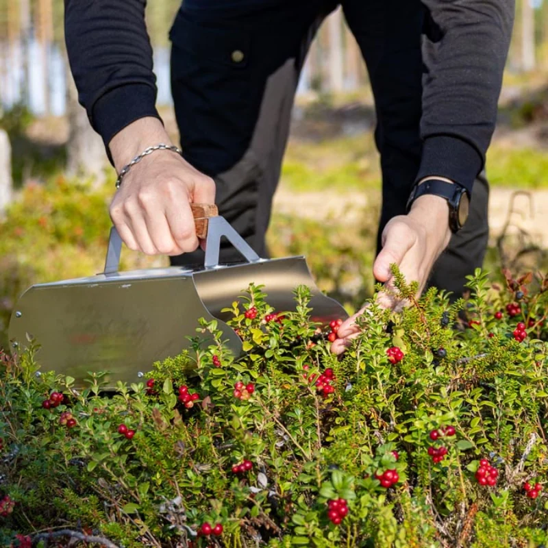

Poimun tarina
Kuhmosta marjametsään.
Veikko Määtän alumiinipoimurilla kerättiin Kuhmossa marjoja vuosikymmeniä. Kun tekijä jäi eläkkeelle, työkalut ja kaavat siirtyivät Timo Kyllöselle. Niistä syntyi Poimu.
Kädenpuristus kesällä 2023
Kyllönen tunsi Marja-Öhrän jo omilta poimintaretkiltään. Kesällä 2023 Määttä ja Kyllönen sopivat poimurin valmistuksen jatkamisesta Kuhmossa.
Vanha työkalu, uusi kahva
Alumiinikoppa säilyi, mutta kahvan muovipäällyste vaihtui käteen istuvaan jalopuuhun. Poimun osat leikataan teollisesti ja kootaan käsin Kuhmossa. Mallisto julkaistiin keväällä 2024.
Tutustu poimureihin Lue Timon kertomusTuotantoa kehitetään Kuhmossa
EU:n osarahoittamalla hankkeella Poimu uudistaa tuotantovälineitä ja parantaa työympäristöä.